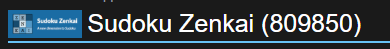
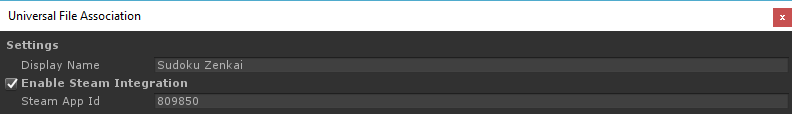

Steam Integration
Regular Standalone Deep Linking opens up your game when someone clicks on a custom defined URI. But if your game is on Steam you are probably using its SDK or DRM capabilities to further enhance your players' experience.
If you open a Steam game from its installation folder, since it wasn't open via steam it probably won't be able to communicate with valve software in order to report achievements, stats, etc, or it won't simply launch due to the DRM feature.
So using the regular Deep Linking mechanism where we associate a custom URI to a game executable wouldn't work since the game would possibly lose functionality or simply wouldn't start.
To avoid this issue, instead of registering your game to your custom URI, we configure the target systems to open steam instead of your game, but we parameterize Steam to open your game as soon as it's initialized.
Configuring Steam Integration¶
To enable the Steam capability of ImaginationOverflow Deep Linking Plugin you first need to have a valid app id, for that you need to get access to Steam Direct. After that valve will attribute to your game an ID.

As an example, Sudoku Zenkai id is 809850.
Then you need to configure the plugin with this id:

The final step of the configuration to enable the Steam integration is setting the IsSteamBuild Property under DeepLinkManager:
ImaginationOverflow.UniversalDeepLinking.DeepLinkManager.Instance.IsSteamBuild = true;
If your game is on Steam there is a good chance that you offer DRM-free versions of it on other stores, so don't forget to turn off this option when making DRM-free standalone builds, a good way to do this automatically is using compilation flags.
#if STEAM_BUILD ImaginationOverflow.UniversalDeepLinking.DeepLinkManager.Instance.IsSteamBuild = true; #else ImaginationOverflow.UniversalDeepLinking.DeepLinkManager.Instance.IsSteamBuild = false; #endif
Mac and Steam Integration¶
Mac Deep Linking works a little different from the Windows and Linux, you have to take special care when integrating the plugin with Mac and Steam. On Linux and Windows, the plugin handles the registration of the Deep Link when the game is first open. This enables the plugin to register whatever it wants on these platforms. On Mac, the Deep Link feature is fully controlled by the OS and the plugin can't change the default configuration, which opens your game directly.
The OS itself doesn't know that is running a Steam game, so when the user clicks on a custom URI, the OS opens the game executable. This means that you need to explicitly delay the enforcement of the DRM until you know if the game was activated via Deep Linking or not.
The plugin is configured in a way that when it's running a Steam game on MacOS it will always fire the LinkActivated event even if the game wasn't activated via Deep Link. This way is possible to store the Deep Link before enforcing any DRM in the game.
Solution Suggestion¶
Below is the code that we use on Sudoku Zenkai to handle this tricky issue, for Steam integration we are using Steamworks.NET.
The user flow for this situation is the following:
- User clicks on a Deep Link.
- The game opens
- The game enforces DRM and launches the game on Steam.
- Steam launches (if not already running).
- Steam launches the game.
To ensure that we process the Deep Link that the user initially clicked we need to save it before enforcing the DRM, in the code below we do exactly that:
- The game is activated via Deep Link.
- The LinkActivated event is triggered.
- Save the link information (since it's impossible to have the game launch on steam via Deep Link)
- Check if the game has steam access, if not restart.
- If we are already on steam, load the previously saved Deep Link
- Resume Deep Link activation.
This behavior is only possible because the plugin always triggers the LinkActivated event (on Steam Mac builds) regardless if it was activated via a Deep Link or not.
public void RegisterForActivation() { #if UNITY_STANDALONE_OSX && STEAM_BUILD DeepLinkManager.Instance.LinkActivated += SteamOsxActivation; #else DeepLinkManager.Instance.LinkActivated += Instance_LinkActivated; #endif } private void SteamOsxActivation(LinkActivation s) { // // On Steam OSX builds the plugin triggers the LinkActivated with the // deep link data or with a null Uri if it wasn't activated // via Deep Linking // if (string.IsNullOrEmpty(s.Uri) == false) YourGameStorage.SaveDeepLinkActivation(s); // // Enforce DRM // if (Steamworks.SteamAPI.RestartAppIfNecessary(new Steamworks.AppId_t([YourAppId]))) { Application.Quit(); return; } // // We are already running on Steam, so load any saved deep linking // activations // s = YourGameStorage.LoadDeepLinkActivation(); if (s == null) return; // // Clear the activation ensuring that the game won't be activated again // with the same uri this depends on your storage infrastructure. // YourGameStorage.ClearDeepLinkActivation(); // // Process deep link activation // Instance_LinkActivated(s); }
This behavior only happens when the game is running on Mac and you set the Steam flag to true, on the other combinations the plugin only fires the LinkActivated event in case of an actual activation.